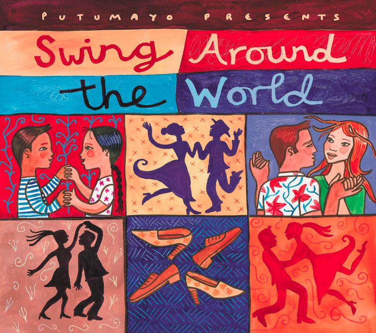
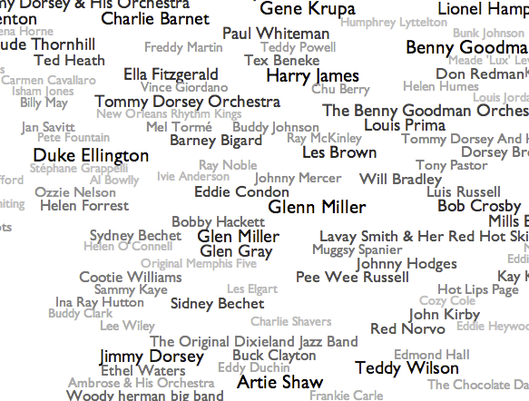

OMG, sau gute (classic) Swing Movies ohne Ende:
http://www.youtube.com/view_play_list?p=78644E2D3E1A7785
OMG, sau gute (classic) Swing Movies ohne Ende:
http://www.youtube.com/view_play_list?p=78644E2D3E1A7785
Schöner Blog von Christian Bossert rund um Swing Musik, DJing & Co.:
Swing DJ Resources – Where Lindy Hop, Balboa & Blues DJs connect
Unbedingt Jazz Song Alphabet lesen, das ist suuper!
http://swingdjresources.com

Schöner Einsteiger Artikel mit guten Musiktipps:
http://pustoblogsky.blogspot.com/2009/09/if-youre-just-learning-east-coast-swing.html
auch schön:
http://www.exil.de/press/5740-swingaround-pi-dt.html

Hummel und Schmetterling beim Swing
Liebe Leute,
mir juckts in den Füßen! Wer bei dem Wetter nicht baden geht, sollte bitte um 16h zum Swingtanzen und Eisessen im Planten un Blomen park kommen. Wir treffen uns bei der Eisdiele am Eingang Renzelstraße / St. Petersburger Str. Eine kleine Box und Musik haben wir am Start. Bringt aber gern noch Musik mit, damit es schön abwechslungsreich bleibt 🙂
Bis später
Date/Time
Date(s) - 21. 07. 2013
16:00 - 19:00
Offenbar ist der Lindy Hop nun im breiten Mainstream angekommen. Gestern beim Grillen hörte ich: Selbst in der Lindenstraße wird Swing getanzt:
Lindy Hop in der Lindenstraße
Alles weitere findet sich auf der Website zu Folge 1437 … http://www.lindenstrasse.de/Folgen/2013/Folge_1437.jsp

Lustige Swing Sprüche und GIFs zum Schmunzeln:
http://whatshouldwecallswingdance.tumblr.com
… erklärt mir mal bitte jemand das Meme?

Schöner Vintage shop in Berlin:
http://www.slowtravelberlin.com/2011/04/20/memory-vintage-shop-cafe/

Wow, bei ‚Every Noise at Once‘ kann man ideal verscheide Musik Genere erkunden und viele neue Inspirationen finden 🙂
This is an algorithmically-generated map of the musical genre-space. Genres and artists are positioned by code and data, adjusted for legibility, but the underlying vectors are less interesting than the juxtapositions and clusters that they produce, so the axes have been deliberately left unlabeled and uncalibrated. You are invited to imagine your own qualities and magnitudes that the geometry might be expressing. I may occasionally spin the axes just to see what happens.
Swing:
http://www.furia.com/misc/genremaps/engenremap-swing.html
Electro Swing:
http://www.furia.com/misc/genremaps/engenremap-electroswing.html

Hier ein schöner Artikel über Tanzschuhe:
http://jam-circle.de/tanzschuhe-dancing-shoes
und hier die üblichen Stores:
http://remixvintageshoes.com/
http://www.jigwalk.com/
http://www.arisallen.com/
http://www.stacyadams.com/shop/styles/mensShoes/page0.html;jsessionid=1d1e49b118b06ea7d97db35adf5c
http://www.facebook.com/pages/Remix-Shoes/324742689457?sk=wall
http://ballroomconnection.blogspot.de/2007/08/buying-dance-shoes-for-dummies.html
Für die, die es durchziehn, ein etwas älterer aber dennoch interessanter Artikel auf ShuffleProjects:
http://www.shuffleprojects.com/2012/how-to-become-better-swing-dancer
… und noch mehr hier:
http://westcoastswingamerica.com/mhtips.htm
http://lalindyhop.com/secrets-to-swing-dancing-well
http://kanwei.com/2011/02/15/becoming-an-intermediate-advanced-lead.html

Schöner Artikel und Audio Beitrag von „Joachim Deicke“ – über das Kiffen 🙂
Viel Rauch um Jazz – wie Haschisch die Musik inspiriert hat:
http://www.radiobremen.de/funkhauseuropa/serien/justmusic/musik598.html
[via Christoph]
Schöner (Online)Shop für Tanzschuhe & Klamotten
http://www.hackeundspitze.de

Ui, schon Fidel Castor und die Transporter gehört? Die bringen gerade mit ‚Swunk‘ frischen Swing Wing nach Berlin. Und hier schicket Video von ‚Flip Flop Fly‘: